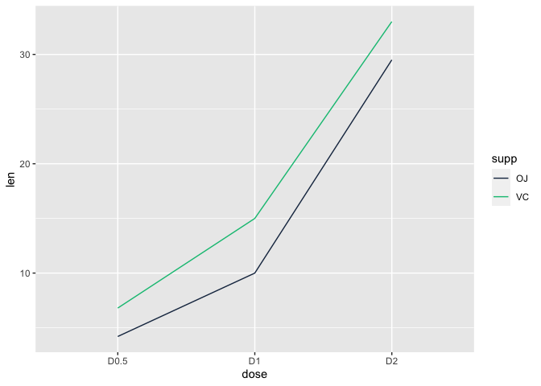
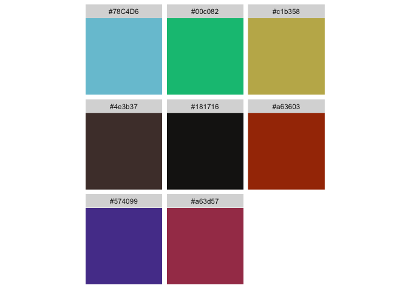
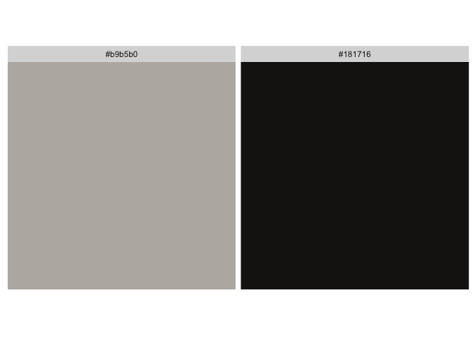

The goal of r2dii.colours is to provide you with an easy access to colours from palettes created for different research streams within 2DII.
Installation
You can install the development version from GitHub with:
# install.packages("devtools")
devtools::install_github("2DegreesInvesting/r2dii.colours")Examples
The r2dii.colours package can be used to retrieve 2DII colour palettes or to retieve the hex codes of particular colours from a palette.
For example, you can retrieve the 2DII plots colour palette and use it’s ‘hex’ column to define the values of the ‘colour’ aesthetic of your ggplot (the first two colours in the palette are used as line colours in this case).
# The palette dataset
palette_2dii_plot
#> # A tibble: 9 × 2
#> label hex
#> <chr> <chr>
#> 1 dark_blue #1b324f
#> 2 green #00c082
#> 3 orange #ff9623
#> 4 grey #d0d7e1
#> 5 dark_purple #574099
#> 6 yellow #f2e06e
#> 7 soft_blue #78c4d6
#> 8 ruby_red #a63d57
#> 9 moss_green #4a5e54
# Use dataset in your plot
df2 <- data.frame(supp=rep(c("VC", "OJ"), each=3),
dose=rep(c("D0.5", "D1", "D2"),2),
len=c(6.8, 15, 33, 4.2, 10, 29.5))
ggplot(df2, aes(x = dose, y = len, group = supp, colour = supp)) +
geom_line() +
scale_colour_manual(values = palette_2dii_plot$hex)
Or you can retrieve the hex codes from a particular palette using the get_colours function and use only these specific colours (in the specific order) in your plot.
# Retrieve the colours in chosen order
colours <- get_colours(
colour_names = c("green", "grey", "red"),
palette = palette_1in1000_goodbad
)
# Use colours in your plot
ggplot(mtcars, aes(x = wt, y = mpg, colour = factor(cyl))) +
geom_point() +
scale_colour_manual(values = colours)
Available colour palettes
The colour palettes available in r2dii.colours package are displayed below using munsell package for convenient hex code colour display. For the colour labels please investigate the palette datasets as shown in the example above.
2DII palettes
Extended organization colour palette that can be used for plotting.
munsell::plot_hex(palette_2dii_plot$hex)
Sector colours (aligned with the PACTA interactive report).
munsell::plot_hex(palette_2dii_sector$hex)
Automotive sector technologies colour shades.
munsell::plot_hex(palette_2dii_automotive$hex)
Power sector technologies colour shades.
munsell::plot_hex(palette_2dii_power$hex)
Oil & gas sector technologies colour shades.
munsell::plot_hex(palette_2dii_oil_gas$hex)
Fossil fuels sector technologies colour shades.
munsell::plot_hex(palette_2dii_fossil_fuels$hex)
Scenario colours.
munsell::plot_hex(palette_2dii_scenario$hex)
1 in 1000 research stream palettes
Extended colour palette that can be used for plotting.
munsell::plot_hex(palette_1in1000_plot$hex)
Colour palette that can be used for differentiating between ‘good’, ‘bad’ and ‘neutral’ outcomes.
munsell::plot_hex(palette_1in1000_goodbad$hex)
Official background colour.
munsell::plot_hex(palette_1in1000_background)